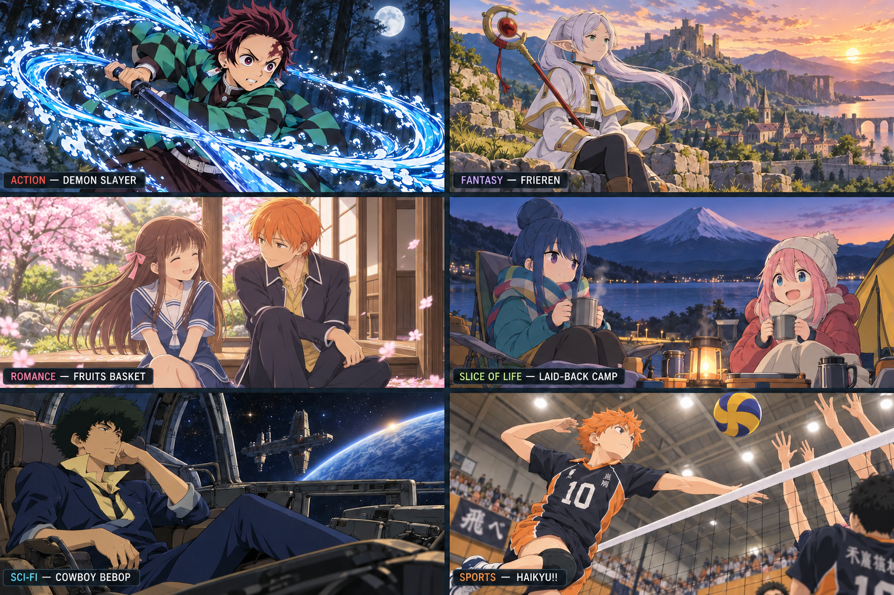

What — Home
Anime is animation from Japan, with stories ranging from everyday friendships to adventures in imaginary worlds. It is a medium with many genres, rather than one type of story.

AI image prompt summary: Create an anime-style image of Tanjiro from Demon Slayer using a water-breathing sword technique in a moonlit forest. This is AI-generated fan art, not an official screenshot.
A Story for Different Moods
- Action: Demon Slayer combines adventure with dramatic battles.
- Fantasy: Frieren explores an imaginative world through a mage’s journey.
- Romance: Fruits Basket combines relationships with supernatural elements.
- Slice of life: Laid-Back Camp focuses on relaxed outdoor adventures.
- Sci-fi: Cowboy Bebop follows bounty hunters traveling through space.
- Sports: Haikyu!! brings volleyball, teamwork, and competition together.
This site explores why I enjoy anime and offers a simple starting point for someone interested in watching.
Who — About Me
Hi, I’m Precious! I’m a computer science student at UNC Charlotte, and watching anime is one of my interests outside of school. I also enjoy video games, reading, and working out.
AI image prompt summary: Create an anime-style image of Hinata from Haikyu!! jumping to spike a volleyball during a match. This is AI-generated fan art, not an official screenshot.
What This Site Shares
This is a personal introduction to anime, with ideas for choosing a series, finding a place to watch, and keeping the hobby manageable during a busy semester.
You do not need to know every show or recognize every reference to enjoy anime. Being curious about a story is enough to get started.
When — Make Time for an Episode
The best time to watch is when it fits around your responsibilities. A short viewing session can be easier to manage than starting a long marathon.
AI image prompt summary: Create a cozy anime-style image of Rin and Nadeshiko from Laid-Back Camp relaxing at a campsite near Mount Fuji. This is AI-generated fan art, not an official screenshot.
| Situation | Viewing idea |
|---|---|
| Busy school night | One episode after finishing priority work. |
| Free weekend | A few episodes with breaks between them. |
| Exam week | Pause the series or save it for after studying. |
Check the episode length before starting, and choose a stopping point so a cliffhanger does not turn into an unexpectedly late night.
Where — Find Your Watching Spot
A comfortable place with clear sound and few distractions makes it easier to follow the story, especially when reading subtitles.
AI image prompt summary: Create an anime-style image of Frieren overlooking a fantasy village and mountains at sunset. This is AI-generated fan art, not an official screenshot.
Places to Enjoy Anime
- At home: use a television, laptop, or tablet in a comfortable spot.
- With friends: agree on a show and keep discussion spoiler-free.
- At an organized screening: check campus event listings for public events and viewing rules.
Use an authorized streaming service, licensed release, or library copy when available. Check the service’s current catalog and your region before choosing a series.
How — Start Your First Series
Start with the kinds of stories you already enjoy in books, movies, or games. A shorter series can make it easier to explore without committing to hundreds of episodes.
AI image prompt summary: Create an anime-style image of Spike Spiegel from Cowboy Bebop inside a spaceship cockpit with a view of space. This is AI-generated fan art, not an official screenshot.
- Pick a genre that sounds interesting.
- Read a spoiler-free description and check the content rating.
- Find an authorized way to watch the series.
- Try subtitles or a dubbed version and choose whichever you prefer.
- Watch a few episodes, then decide whether you want to continue.
There is no required watch order for exploring anime as a hobby. For a series with sequels or movies, check its release order before starting.
Why — More Than a Watchlist
Anime brings together visual art, music, and storytelling. Those elements can make a quiet conversation or a big action scene memorable in different ways.
AI image prompt summary: Create a warm anime-style image of Tohru and Kyo from Fruits Basket sharing a quiet moment near cherry blossoms. This is AI-generated fan art, not an official screenshot.
Reasons to Explore the Hobby
- Creativity: discover distinctive settings, character designs, and animation.
- Connection: share reactions and recommendations with other viewers.
- Variety: explore different genres and perspectives through fiction.
For me, anime is one of several interests I enjoy outside of my coursework. This site is a way to share that interest with someone who might be curious about it.
AI Prompts Used
AI assistance was used to help create the HTML structure, CSS styling, JavaScript navigation, written content, and images.
AI image prompt summary: Create six anime-style scenes featuring recognizable characters from Demon Slayer, Frieren, Fruits Basket, Laid-Back Camp, Cowboy Bebop, and Haikyu!!, using a consistent illustration style.
Website Structure Prompt
Help me create a website about my hobby, anime. Guide me through the process and help organize the required sections.
CSS Prompt
Help style the anime website using an embedded stylesheet, CRAP design principles, a responsive layout, and a midnight navy and gold color scheme different from my main site.
JavaScript Prompt
Help me show one section at a time, display Home first, and update the browser title to match the section being shown.
Image Prompt
Help me create anime-style images based on different genres and existing series. Use recognizable characters and settings while keeping the artwork consistent. Change the romance image from Your Lie in April to Fruits Basket.
These prompts summarize the instructions developed during the project. The final artwork was created with ChatGPT’s image-generation tool and is not official artwork from the featured series.